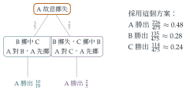

STEP II 1995，第 12 題
繼續之前，請先閱讀題目（原題為英文）。題目載於 STEP Support Programme 的題目資料庫： step.maths.org/questions/95-s2-q12
引子
三個人用餐包決鬥。Cuthbert 百發百中，Bertie 每五次擲中三次，而 Algernon 準頭最差，每五次只擲中兩次。Algernon 先擲。他應該瞄準誰？答案出人意表：誰也不瞄準。他應該故意把餐包擲偏。
原因在於策略。只要三人都仍在場，Bertie 和 Cuthbert 這兩個危險的對手就會互相瞄準。假如 Algernon 淘汰了其中一人，餘下的那個便會轉而對付他。他故意擲失，就能讓那兩人先行分出勝負，然後由他向倖存者先擲一次。事實上，只要採用最佳方案，準頭最差的人反而最有可能勝出。這場「三人決鬥」（truel）是博弈論（game theory）中常被引用的例子，說明弱勢有時反而是優勢。
動筆之前
在一場二人決鬥中，Percy 先擲。他要麼一擲即中，要麼兩人都擲失，於是局面完全重演。試寫出一條關於 Percy 勝出概率（probability）的方程。
設 \(P\) 為 Percy 勝出的概率。他一擲即中的概率是 \(p\)；否則（概率為 \(1 - p\)）輪到 Rodney 擲，而 Rodney 擲失的概率是 \(1 - r\)，此時局面回到起點。所以 \(P = p + (1 - p)(1 - r)P\)。
逐步解題
階段 1 二人決鬥
解方程，得 \(P\bigl(1 - (1 - p)(1 - r)\bigr) = p\)，而 \(1 - (1 - p)(1 - r) = p + r - pr\)，所以 \[P = \frac{p}{p + r - pr}. \qed\] 若 Algernon（\(p = \frac25\)）對 Bertie（\(r = \frac35\)），由 Algernon 先擲，這個概率是 \(\frac{2/5}{2/5 + 3/5 - 6/25} = \frac{10}{19}\)；若由 Bertie 先擲，Algernon 勝出的概率是 \(\bigl(1 - \frac35\bigr)\cdot\frac{10}{19} = \frac{4}{19}\)。
階段 2 Algernon 的三個選擇
在每種情況下，還剩下誰？下一個輪到誰擲？
Algernon 擲中 Cuthbert。接着由 Bertie 擲，目標是 Algernon。Algernon 要在 Bertie 先擲的二人決鬥中勝出：概率為 \(\frac{4}{19}\)。
Algernon 擲中 Bertie。接着由 Cuthbert 擲，目標是 Algernon，而他從不失手。Algernon 的勝出機會是 \(0\)。
Algernon 擲失。Bertie 向 Cuthbert 擲。他有 \(\frac35\) 的概率擲中，剩下 Algernon 和 Bertie，並由 Algernon 先擲：Algernon 勝出的概率是 \(\frac{10}{19}\)。Bertie 有 \(\frac25\) 的概率擲失，然後 Cuthbert 擲中 Bertie，Algernon 便要面對 Cuthbert，而且只有一次出手機會：他必須擲中才能勝出，概率為 \(\frac25\)。合計為 \[\tfrac35\cdot\tfrac{10}{19} + \tfrac25\cdot\tfrac25 = \tfrac{6}{19} + \tfrac{4}{25} = \tfrac{150 + 76}{475} = \tfrac{226}{475} \approx 0.476.\]
階段 3 建議
如果 Algernon 瞄準 Cuthbert，他可能擲中（概率為 \(\frac25\)），也可能擲失。他整體的勝出機會是多少？試與故意擲失比較。
瞄準 Cuthbert 的勝出概率是 \(\frac25\cdot\frac{4}{19} + \frac35\cdot\frac{226}{475} = \frac{200 + 678}{2375} = \frac{878}{2375} \approx 0.370\)。瞄準 Bertie 則更差。故意擲失的勝出概率是 \(\frac{226}{475} \approx 0.476\)，是三者中最高的。所以 Algernon 應該把餐包擲偏，這樣他勝出的概率是 \(\frac{226}{475}\)。■

回顧
重複出現的局面可以列出方程。兩人都擲失後，決鬥「重新開始」，由此得出一條關於勝出概率的線性方程（linear equation）。
考慮對手的反應。Algernon 的每個選擇，都會改變 Bertie 和 Cuthbert 接下來的行動。
比較所有選擇，包括甚麼都不做。最好的一着，正是看來最差的那一着。
背後的數學
策略與博弈論
三人決鬥展示了博弈論的核心思想：最佳行動取決於其他參與者會如何回應。擲中最危險的對手 Cuthbert 看似理所當然，但這樣做會改變局勢，反而對 Algernon 不利。在本題中，Bertie 和 Cuthbert 的策略（strategy）是固定的（他們互相瞄準）；在完整的博弈論分析中，每個參與者都會自行選擇策略，並且知道其他人也在這樣做。這類分析始於馮·諾伊曼（John von Neumann）與摩根斯坦（Oskar Morgenstern）在 1944 年的工作，以及納殊（John Nash）在 1950 年的工作，如今已成為經濟學、演化生物學和政治學的基礎。
強大反成弱點
三人決鬥中誰會勝出？若 Algernon 採用最佳方案，Algernon 勝出的概率是 \(\frac{226}{475}\)，Bertie 是 \(\frac{135}{475}\)，Cuthbert 是 \(\frac{114}{475}\)。準頭最好的人最不可能倖存，因為凡是可以選擇目標的人都會瞄準他。同樣的規律也見於有多名候選人的選舉、企業之間的競爭，以及自然界：最強的競爭者可能成為首個被攻擊的目標。Martin Shubik 在 1950 年代把三人決鬥引入博弈論，並藉此探問：最適者是否必然生存？
思維技巧
選擇行動之前，先弄清楚它會怎樣改變其他各人面對的局面，以及他們會如何回應。
到了大學，這會發展成博弈論中的逆向歸納法（backward induction）：先分析博弈的終局，再往回推，從而決定最佳的第一步。
延伸練習
Bertie 與 Cuthbert。驗證：若 Algernon 故意擲失，Bertie 勝出的概率是 \(\frac{135}{475}\)，Cuthbert 勝出的概率是 \(\frac{114}{475}\)。
準頭較好的投手。假如 Algernon 擲中的概率是 \(a\) 而不是 \(\frac25\)，當 \(a\) 取哪些值時，故意擲失仍然是他最佳的第一步？
Bertie 應該瞄準 Cuthbert 嗎？已知 Algernon 故意擲失，Bertie 瞄準 Cuthbert 而不瞄準 Algernon，是否對他自己有利？（假設 Cuthbert 的行為不變。）
投擲次數有限的決鬥。在一場每人只可擲兩次的二人決鬥中，求 Percy 勝出的概率，並與不限次數的決鬥比較。
延伸閱讀
D. Marc Kilgour & Steven Brams，「The truel」，Mathematics Magazine 70 (1997)。一篇淺白易讀的三人決鬥綜述。
Avinash Dixit & Barry Nalebuff，Thinking Strategically（Norton）。寫給一般讀者的博弈論讀物，當中也談到三人決鬥。
Ken Binmore，Game Theory: A Very Short Introduction（Oxford University Press）。